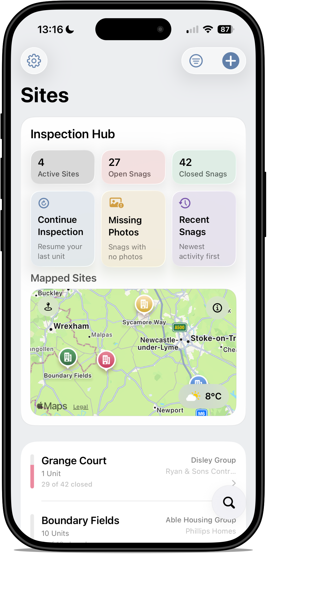
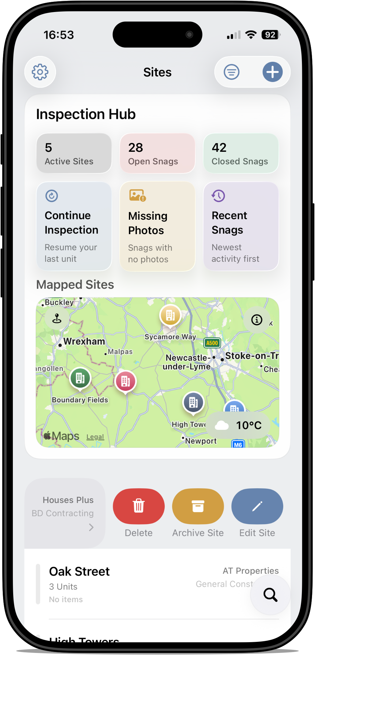
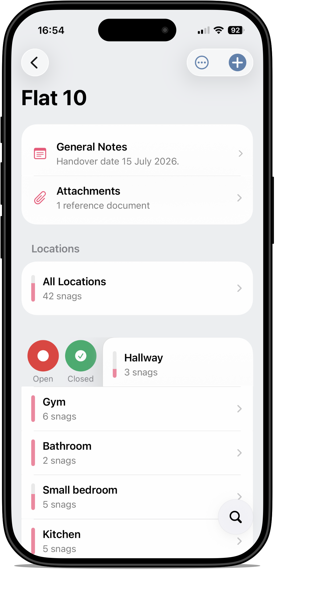
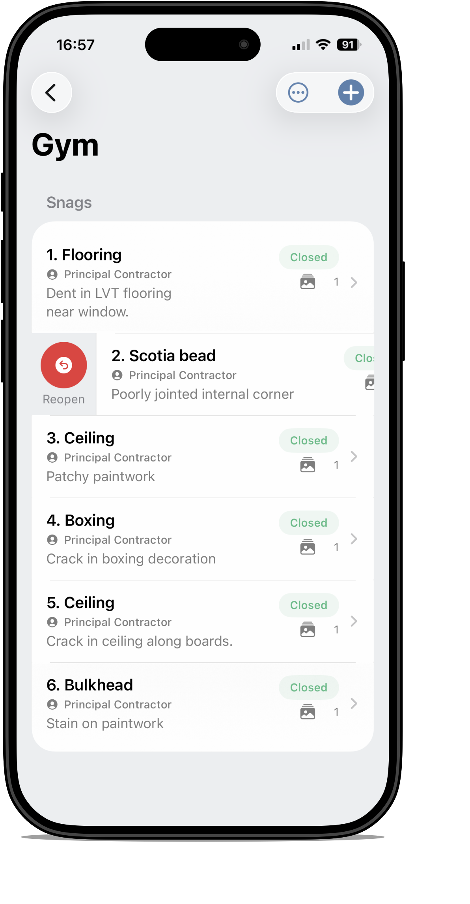
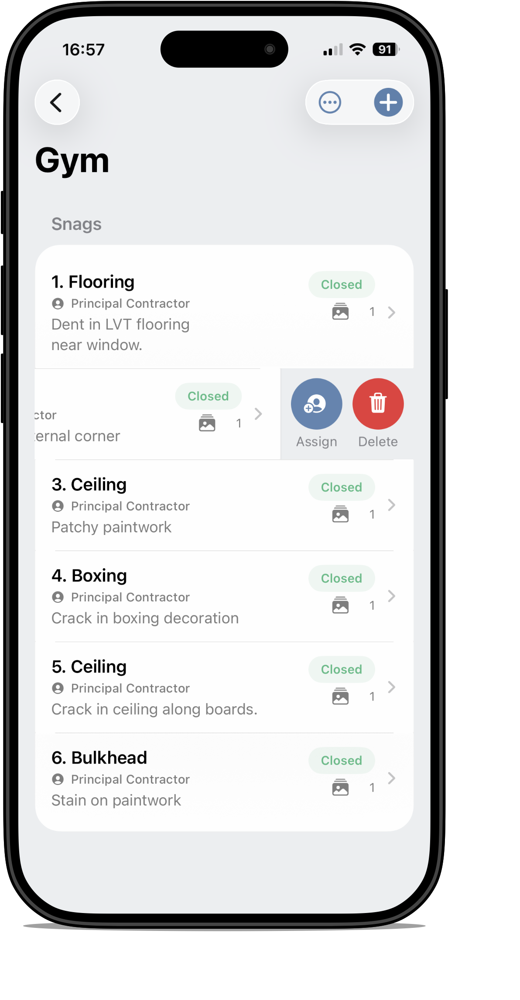
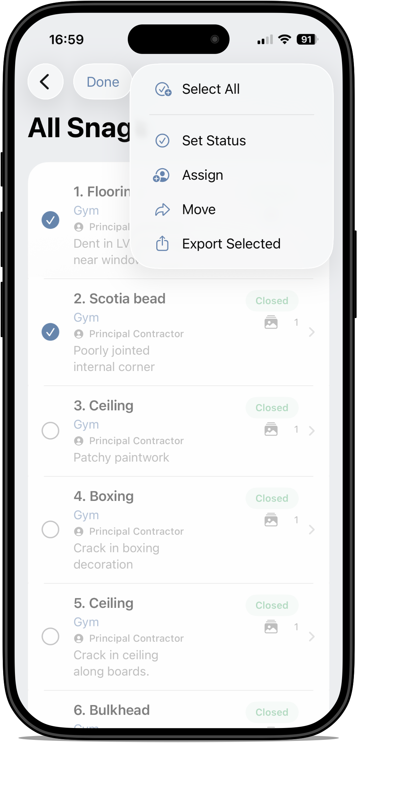
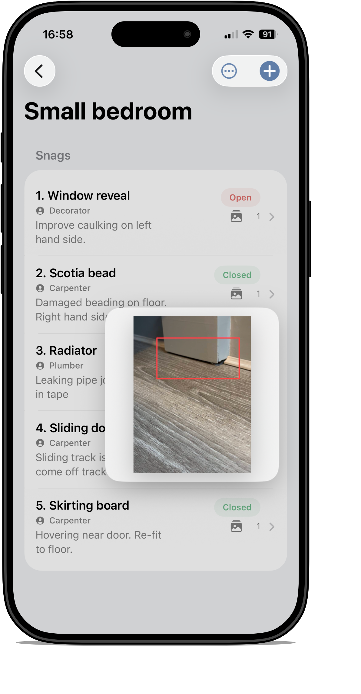

Tips and Tricks
This page highlights useful features that can speed up navigation, reduce storage use and make day-to-day inspection work more efficient.
Useful features to look out for:
- Inspection Hub shortcuts
- Home Screen widgets
- site archiving options
- swipe actions on rows
- bulk actions in snag lists
- quick look preview for photos
Tap any screenshot thumbnail to open a larger view.
Inspection Hub and widgets
Inspection Hub shortcuts
The Inspection Hub provides three quick shortcuts to help you get back to useful parts of the app more quickly:
- Continue Inspection – returns you to your current or most recent inspection flow
- Missing Photos – helps identify snag records without attached images
- Recent Snags – shows recently active snag records

Small and medium widgets
Snaglite also provides small and medium Home Screen widgets which mirror these shortcut ideas, making it faster to jump into active inspection work without opening the app and navigating manually.
Archiving sites
Archive options
Sites can be archived in two ways:
- Archive Only
- Archive and Remove Full-Sized Photos
Both options move the site into an archive section within the Sites list. Archived sites can be hidden from view, and the associated map pin is also hidden.

Archive and Remove Full-Sized Photos
This option archives the site and permanently removes stored full-sized photos to reduce storage use. Small thumbnails are retained where available. Notes, snag data and other project information remain available.
Swipe actions
Location row swipe actions
Many rows in Snaglite support swipe actions for quicker access to common functions. Depending on the screen, this can include actions such as opening, closing, assigning, archiving or deleting.

Snag row swipe actions
Snag rows also support swipe gestures for rapid management. This is useful when updating several items during an inspection or review.

Quick assign and delete
Some swipe actions expose immediate shortcuts, such as assigning an item or deleting it, reducing the need to open the full detail screen.

Bulk actions in All Snags
The All Snags view supports bulk actions, which can be useful when managing several records together. Depending on context, bulk actions may include selecting all, setting status, assigning, moving or exporting selected items.

Quick look for photos
Preview without fully opening the snag
Where available, photo quick look allows you to preview an attached image more quickly. This is useful when you want to check the visual record without leaving the list context for longer than necessary. Just press and hold a record to quickly view the an image.
